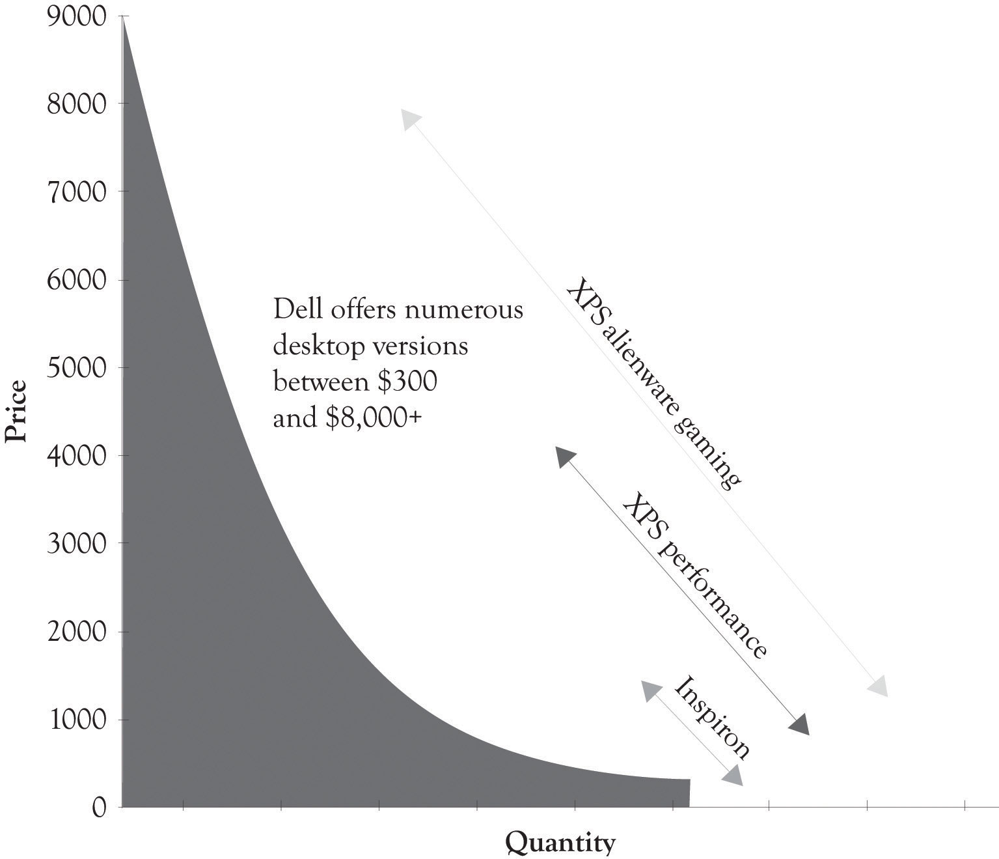
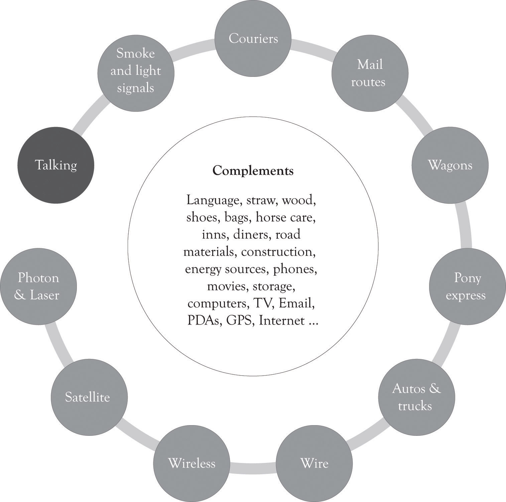
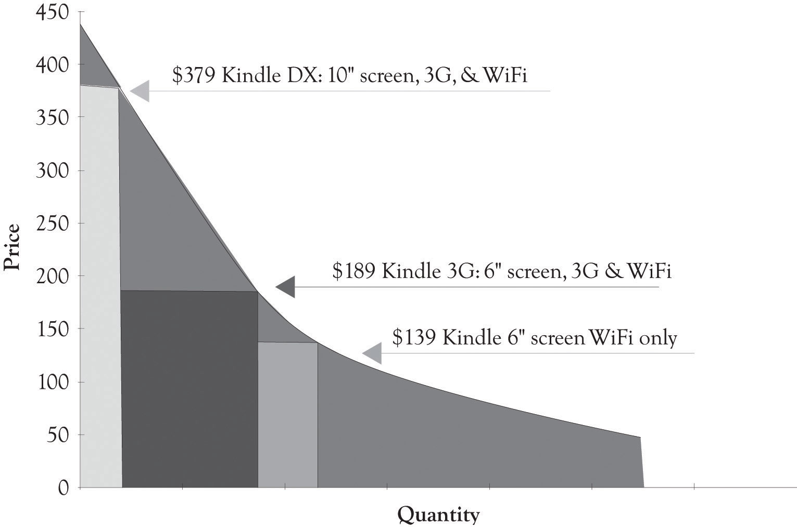
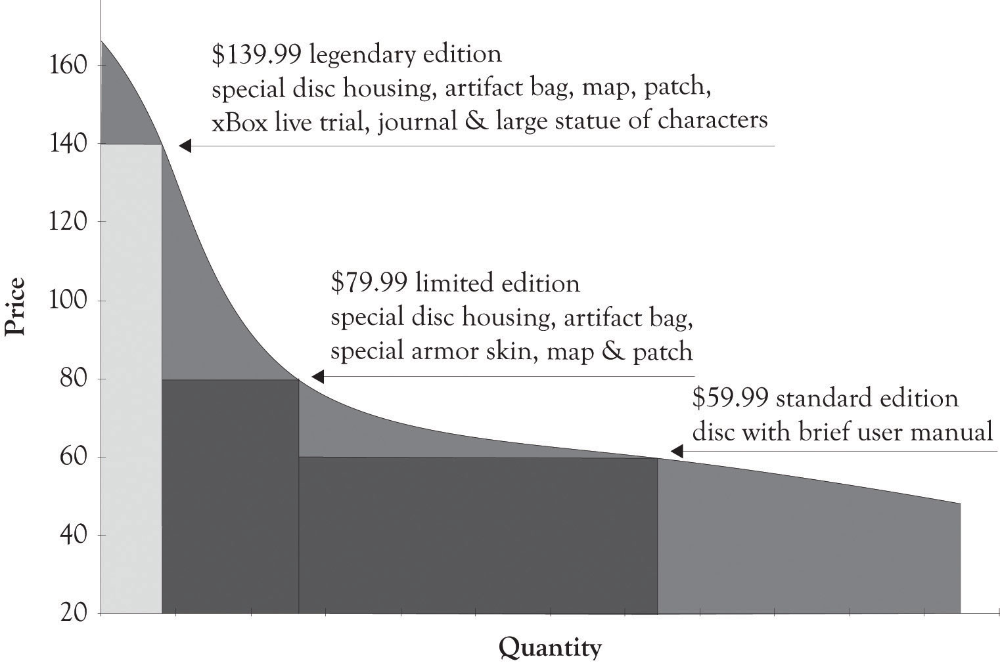

In this chapter, more examples of product differentiation and versioning curves are presented. As noted earlier, the purpose of the product differentiation curves (PD curves) or versioning curves is primarily conceptual. However, the underlining rationale behind the curves is to generate more revenue and to provide a foundation for conducting economic experiments on what features attract consumers. In essence, introducing multiple versions of a product permits a company to experiment and observe economic behavior in action. The company can monitor purchase behavior and determine which features and products consumers deem most desirable. Such experimentation is actually the most effective activity for conducting research and engaging in new product development. This chapter presents several examples of how versioning is being used for a variety of products and services.
Figure 5.1 "PD Curves for Toyota Passenger Cars" illustrates a PD curve for Toyota cars that uses sales estimates from 1 month projected to a year. This PD curve also illustrates that demand curves are rarely linear and this is particularly true at the high end and low end of the demand curve for Midas and Hermes versions. It is difficult to obtain precise sales data and the graph should be used to understand how Toyota differentiates their cars and not to illustrate actual sales figures for the company. This is true in many of the graphs used in the book. There are other products in the company’s lineup, but these are their primary products for the Midas, Atlas, and Hermes customers. Within each line, there is also product differentiation. Figure 5.2 "PD Curve for Camry" illustrates the product price and product differentiation for the Camry line.
Toyota actually has another high-end product, the Lexus line. This line is actually more luxurious than the Toyota Avalon model and appeals to individuals at the highest income levels. The PD curve in Figure 5.3 "PD Curve for Lexus Sedan" illustrates that there is also Midas, Atlas, and Hermes versions for the Lexus sedans. The width of the Lexus ES quantity reflects the fact that the ES sedan dominates Lexus sedan sales. The top of the line for the Lexus sedans can be found in the hybrid cars. The Lexus hybrids start around $45,000 and scale all the way up to around $120,000 for a fully loaded LS hybrid.
Figure 5.1 PD Curves for Toyota Passenger Cars
Figure 5.2 PD Curve for Camry

Figure 5.3 PD Curve for Lexus Sedan

Figure 5.4 PD Curve for Engine Technologies
Motor technologies can also be placed on PD curves. Figure 5.4 "PD Curve for Engine Technologies" illustrates that combustion engines are at this time occupying the lower end of a PD curve. However, the hybrid cars that involve both internal combustion and electrical components are emerging as mass-appeal technologies. The hydrogen fuel cell autos and pure electric cars occupy the high end of the PD curve.
Dynamic differentiationThe ability to sell personalized, closely related—but not identical—products to consumers. is the ability to sell personalized closely related, but not identical products to consumers. In a perfectly competitive market, there are a large number of knowledgeable sellers selling a standardized product to a large number of knowledgeable consumers. In such a market, product and price differentiation is difficult, if not impossible. In such a market, it is also impossible to extract any additional money from such consumers even if you can identify how much each consumer is willing-to-pay. That is why businesses turn toward product differentiation and the monopolistic competition model. As noted before, over 99% of the approximately 23+ million businesses are involved in monopolistic competition.Slavin (2008). The king of monopolistic competition is certainly L’Enfant terrible Michael Dell and his creation, Dell.com.
Michael Dell started out with three guiding principles:
It appears that always listen to the customer is the driving force behind his model, but in reality, never selling indirectly is the engine behind the Dell model. Dell believes that the best way to listen to his customers is watch the customer select from a menu of system features and let the customer tell them what they value. This is the epitome of dynamic differentiation. By selling directly, Dell is very close to the customer and Dell can constantly adapt to subtle shifts and changes in customer preferences. Because they know what features are in greatest demand, they can move them to the high-end products. It is indeed manipulation, and a way to extract consumer surplus. And as an added benefit, Dell can carry very little inventory because they are listening to their customers and building the systems as the orders arrive.
Dell has of course adapted its model and has put more emphasis on listeneing to their customers. They are now selling products indirectly in the USA, in China, and all over the world. This is, in part, because PCs and laptops are becoming commodity products and less differentiable, but also because Dell has been listening to their current and potential customers. Some of them want the instant gratification of buying and taking it home today and some of them want to touch and feel before they buy.
At one time, Dell was more-or-less a pure pull company, just like Amazon.com. Much of their entire production system was driven by actual orders from customers. Part of their production process has also pushed products to consumers, but they are on balance a pull process company. They have been drawn toward the dark side and push production because of the demands of the marketplace. In a push production processOrders are forecasted and some products are scheduled for production based on forecasts and retailer demand rather than the end-consumer., orders are forecasted and some products are scheduled for production based on forecasts and retailer demand rather than end-consumer. This change in attitude toward selling directly also coincides with Dell’s move to sell off their manufacturing units. They are attempting to alleviate the risk inherent in manufacturing products before customers order them. The risk is of course excess inventory and Dell disdains inventory. After Dell sells their manufacturing facilities, their systems suppliers will then absorb some of the risk of carrying excess and outdated inventory.
Figure 5.5 Differentiation at Dell
Dell, because of its direct selling and the ability to install numerous features, is a prime example of dynamic differentiation. They offer literally thousands of different product configurations or versions. As illustrated in Figure 5.5 "Differentiation at Dell", Dell has feature points over a broad range of prices (these statistics approximate Dell’s line in 2011).
Microsoft over the past couple of years has jumped on the price discrimination bandwagon. It was difficult for them to engage in product and price differentiation because they were generating piles of cash as a monopoly. Microsoft is a monopolist in the operating systems arena and with their office suite of applications. The marginal cost to produce incremental levels of software and other information goods, such as DVDs and music, is essentially zero. But as usual, the fixed costs are substantial, and because Microsoft is a price setter, they chose to sell at a price that covers their fixed costs but still permits them to make a large profit without irritating too many consumers.This section has been adapted from a paper by Gopal and Sanders (2000).
For many years, Microsoft was not interested in price discrimination based on geography, market segment, or per capita GDP. But Microsoft had to move toward price discrimination because the willingness-to-pay for software was related to software piracy. Students and individuals with low incomes are price-sensitive and will simply turn to piracy when the price exceeds their willingness-to-pay. They also had to offer certain market segments lower prices because piracy was essentially rampant. Microsoft began to realize that they were leaving money on the table because they did not take dramatic steps to price discriminate through product differentiation. They have, in general, avoided unwanted attention by the FTC by attempting to follow the three guidelines outlined in Chapter 2 "Fundamentals of Product and Price Differentiation".
Sometimes product differentiation does not work.Ihnatko (2009). Microsoft tried to differentiate the Vista operating system (see the snap shot of Windows 7 and Vista Versioning in Figure 5.6 "Windows 7 and Vista Product Differentiation"). But Vista never gained legs for a variety of technical, customer support and marketing reasons. The product was not ready for prime time. They continued to product differentiate and price discriminate with the release of Windows 7. Home Premium was priced at $199.99, Professional at $299.99, and Ultimate at $319.99. They definitely used the Goldilocks versioning. It appears that Windows 7 was a success because it was a stable, fast, and friendly operating system.
Of late, Microsoft has also had to contend with Google’s foray into the online office application suite called Google Docs and IBM’s offering of open-sourced Linux-based applications. The competition is heating up and the Microsoft monopoly is under attack on many fronts. Monopolies are often transitory as the competition looks for a crack in the armor and a chance to drink from the fountain of plenty. The growth of cloud computing (where data storage and CPU cycles move toward the utility model) and the availability of net-centric applications could continue to erode Microsoft’s market share. They have, however, started to address the attack by introducing a cloud-based Office 365 and the Azure development platform.
Figure 5.6 Windows 7 and Vista Product Differentiation

The most important activity in the history of humankind has been in the area of communications. As illustrated in Figure 5.7 "Communication Drives Innovation", the desire to communicate has been the driving force behind most of the advances in modern technology. The wireless phone is the current battle ground for the universal communication device that will be used for talking, texting and tagging friends and colleagues, scheduling, listening to music, reading eBooks, and in location assistance. Apple and Nokia’s strategies are distinctly different. Apple has gone after the cream and focused on the high end, competes primarily in the smartphone arena, and is also beginning to compete with the net-book laptops. Smartphones have applications such as scheduling, location assistance, email, and Internet access.
Nokia is not only interested in the high-end smartphone market, but they are also selling to the price-sensitive demographic and have an even bigger target in their sight. They want to become the biggest entertainment media network in the world.Borden (2009). They are trying to reach the entire market by using research and development (they have numerous research laboratories throughout the world) and by pursuing a comprehensive differentiation strategy. Nokia offers devices to satisfy every budget and they are trying to make their products and services indispensable. They have, however, been under an intense attack by Apple and Android-based phones. Android-based phones are very versatile and there are numerous models available at many price points.
Figure 5.7 Communication Drives Innovation
Figure 5.8 "Broad-based Versus High-End Differentiation Strategies for Cell Phone Devices" illustrates a PD curve for several cell phone devices. Apple and Android-based phones have been making steady gains in the smartphone business. Apple has been willing to offer a downscaled version of the iPod to the price-sensitive masses with the Nano and Shuffle. We suspect that iPhone technology will be adapted to the price-sensitive tail of the demand curve because of the competitive pressure of Android-based phones.
Figure 5.8 Broad-based Versus High-End Differentiation Strategies for Cell Phone Devices

One way to compete on price is to make it difficult for the consumer to know the true price of the product. Companies sometimes use differentiation to hide the true cost of purchasing products and services. Many companies accomplish this task by offering very complex pricing and bundling plans (numerous versions). Wireless service and long-distance providers have become very good at this strategy. These providers rarely offer simple plans such as 5 cents per minute for a certain level of usage or 3 cents per minute for a certain level of usage. Instead, they offer customer’s very complex pricing schemes and service bundles that are difficult to disentangle. This helps these providers as well as providers of cable and Internet services to reduce the damage of price competition. Consumers have to engage in a large amount of price and feature comparisons in order to understand the features provided in the tableau of products and services. This is essentially a form of product differentiation but it is more precisely service differentiation.
Because Apple had such a strong brand and was very successful, they were able to secure part of the ongoing revenue stream that AT&T received as a wireless carrier. The success of the iPhone resulted in extreme demands on the AT&T network and this led to the introduction of a pay-for-level-of-use program in the middle of 2010 when the Apple iPhone 4 was introduced. One objective of the service differentiation plans was to reduce network traffic, but it also gave Apple and AT&T the ability to extract more revenue from their existing customer base and to attract new more price-sensitive customers. The original data plan was $30 with no restrictions on the amount of data streamed. Under the new pricing structure, customers with deep pockets and less sensitive willingness-to-pay functions would readily pay $25 for 2 gigabytes of streaming and $10 for each additional gigabyte. Apple has recently introduced new iPhones at substantially reduced prices than their earlier launches. The iPhone models entered in at what we view as Atlas levels of $199 and $299. Apple also revamped their data plan to capture some Hermes-level customers by introducing a revamped data plan. The new low-end plan was $15 and this included 200 megabytes of streamed data for more price-sensitive customers. These plans will of course evolve as Apple and AT&T conduct further competitive experiments on the right combination of phones and data plans. Figure 5.9 "iPhone 4 Data Stream Plans" illustrates the service differentiation curve for the data plans.
Figure 5.9 iPhone 4 Data Stream Plans

One particularly interesting area of competition is in the e-book arena. The Amazon Kindle started out very strong and looked like a strong contender to capture the market for electronic books. Apple founder Steve Jobs was not impressed and stated, “It doesn’t matter how good or bad the product is, the fact is that people don’t read anymore.”Markoff (2008). Well he did release an e-book reader, the iPad, that also had additional functionality. Amazon responded by releasing three Kindle versions and by developing an iPad app for downloading and buying books from Amazon. Figure 5.10 "iPad Differentiation" and Figure 5.11 "Differentiating the Kindle" illustrate PD curves for the iPad and Kindle, respectively. It is apparent that the Apple has taken great pains to develop versions for a wide range of individuals with differing price sensitivities at the high end.
Figure 5.10 iPad Differentiation

Figure 5.11 Differentiating the Kindle
AOL Time Warner lost over $98 billion in 2002. This happened after AOL had purchased Time Warner for $106 billion in 2001.Lieberman (2003). The Time Warner content was supposed to propel AOL, the king of distribution, to the next level. Differentiating content and getting people to pay for the content is one of the most difficult problems facing many companies including newspaper and magazines publishers. As illustrated in Figure 5.12 "Digital Content Differentiation Strategies", it is possible to differentiate content, but it is still difficult to get the consumer to pay for digital content. Many consumers simply do not want to pay for the content because much of the content on the Web was free in the past and even when it was not free, it could be read indirectly by creative searching and by pirating.
Figure 5.12 Digital Content Differentiation Strategies

One way to make all contents desirable is to deliver the content faster and more conveniently than any other business. This can, in some instances, change the demand curve and increase the amount consumers are willing-to-pay for a content version. One way this is being tested is through the use of tablet computers such as the iPad or the Kindle. Delivering content faster and more conveniently than the competition amplifies the value of the content, even aggregated and repackaged content.
One of the challenges of providing content is to develop versions for mobile devices, for traditional Web browsing, and for print media. Content has to be written so that it can be used simultaneously for perusal on a mobile device, on the Web, and in traditional print media.A special note of thanks is extended to Emily Wester, consultant and owner of Magic City Media, for providing insight into the material used in this section. The key is to have different versions of content available that do not cannibalize each other. Headlines can effectively make-or-break a business model. For example, a headline received from a mobile phone should not only be interesting enough so that it is passed on to others, but also tweak the interest of the reader so that they will turn to more in-depth content on the Web or in print. If it provides too much information, then the reader will be satisfied and will not look toward other media outlets. Versioning via the type of media outlet is critical to the survival of content providers. Content needs to be carefully crafted in terms of its length and the information provided so that it conveys some information, but not too much; yet it has to be compelling so that it entices the consumer to delve into other outlets. This is the essence of the versioning process.
The primary characteristic of entertainment and media content is that the fixed costs for development are very high and the variable costs for reproducing digital movies, video game software, television programs, electronic books, and music are very low. The key is to find ways to sell at low price levels for those individuals who are price-sensitive and to capture some of the consumers’ surplus from customers who are price-insensitive. Movies are typically consumed only once and it is important to try to meet demand when there is a lot of hype around the release. In the case of movie releases, this is accomplished by charging more for movies attended in the first 3 or 4 weeks of introduction at theaters, charging less when they are released on pay-per-view, and even less when they are rented on DVD. Consumers who want the movie for a repeat view will pay a price that is usually above the price of attending the movie at a theater.
Video game publishers have found a unique way of differentiating their product on launch day by offering unique packaging and complementary items that are useful to game play and other items that are collectibles. These bundles amplify the consumer’s feelings of game uniqueness, but in reality the game is essentially the same. Microsoft used this strategy when they released Halo Reach. The standard game was sold for $59.99 and essentially just came with a disc and brief manual. The limited edition cost consumers $79.99 and the Legendary edition cost $139.99. They were packaged differently and they also contained supplementary materials, such as journals, unique armor that could be downloaded and worn during battles, and statues of the virtual team members who support the game players during battles. The game was a resounding success, and sales on the first day were estimated to be in excess of $200 million. Soon after the launch, the $139.99 legendary version was discounted to $99.99. This illustrates that even a successful product can be overversioned and overpriced. Consumer behavior on the upper (Midas area) and lower (Hermes area) parts of the demand curve is difficult to predict. There is a large measure of demand uncertainty at the extremes of the demand curve. Consumers expect prices to be in a certain range and when they are not, it is difficult to predict the demand. Figure 5.13 "Product Differentiation for the Halo Reach Game" presents a product differentiation graph for Halo Reach on launch day.
Figure 5.13 Product Differentiation for the Halo Reach Game
According to the American Cancer Society, the estimated number of new cancer cases in 2010 was over 1.5 million.American Cancer Society (2010). One of my classes recently analyzed a case involving NovaCure, a company that developed a promising approach for treating cancer.Sahlman and Flaherty (2010). NovaCure developed a technique to disrupt cancer cell division using electromagnetic waves, called Tumor Treating Fields. Early clinical trials suggest that when the Tumor Treating Fields are used in conjunction with chemotherapy, the survival time of glioblastoma patients improves significantly. NovaCure estimates that the therapy might be suitable for treating 200,000 different types of cancers including brain tumors, head and neck tumors, presurgical breast treatment, nonsmall-lung cancer, and pancreatic cancer. Since the NovaCure approach is not a drug, but a medical device, the approval process is abbreviated, but it is still extensive and expensive. The question raised during the case analyses was whether versioning could be applied to treating diseases?The students analyzed the case by first using the FAD (features, attributes, and design) template and the Ten–Ten planning templates. In general, the case analyses were superlative and several creative solutions for versioning were identified. The total expenditures for life sciences’ R&D in the USA in 2010 were over $59 billion and over $133 billion globally.Grueber and Studt (2011). Life sciences include pharmaceuticals, medical devices and equipment, and biotechnology. The approval of pharmaceuticals and medical treatments and the accompanying R&D can exceed hundreds of millions of dollars. Versioning can even help solve the difficult problem of covering costs of developing expensive treatments for diseases and treating a substantial number of patients.
Figure 5.14 "Net Profits When Only One Version of the Treatment Is Offered" illustrates a hypothetical demand curve for a hypothetical treatment for a hypothetical cancer that affects 200,000 individuals a year. The made-up variable costs for treating the cancer were set at $4,000. This is the base or minimum variable cost. As illustrated in Figure 5.14 "Net Profits When Only One Version of the Treatment Is Offered", if the company only sold one version at $35,000 per month, they would net $341 million per month. If they sell only the Atlas version at $15,000 per month, they would net $539 million per month. If they sell the Hermes version at $2,000 per month, they would lose $280 million per month.
Figure 5.14 Net Profits When Only One Version of the Treatment Is Offered

The first thing that has to be dealt with is that there are two conflicting goals. The drug and medical devices community want to cover the cost of development and eventually makes a profit. The goal of patients, doctors and some policy makers is to cure as many people as possible. This situation also illustrates that there is a difference in the willingness-to-pay and the ability-to-pay. In most situations, consumers are engaged in a never-ending calculus involving how much money they have to spend and how they want to allocate their money. These calculations are hidden, yet ongoing, and always involve trade-offs related to wants and desires and the consumers’ willingness-to-pay for a product or service. When there are decisions related to sustaining life, the life-sustaining trade-off dominates. There is a mismatch between the willingness-to-pay and the ability-to-pay. Versioning can help.
Figure 5.15 "Net Profit When Three Treatment Versions Are Offered" illustrates how a hypothetical drug or medical device company could make a nice profit by versioning the cancer treatment and also treat 70% of the patients having the disease. The company could just offer one version of the product and net $539 million and treat 49,000 patients, or offer three versions and net $239 million and treat 140,000 patients. This should cover the fixed costs of product development. The actual implementation of versioning would of course be subject to a variety of inputs and serious dialog involving the public, the drug and medical device companies, insurance companies, the health care community, economists, policy makers, and politicians. And of course arbitrage would have to be dealt with. Some sort of mechanism would have to be in place to prevent the purchase of a Hermes treatment and selling it in the Midas market. As we have demonstrated throughout this book, versioning is a keystone foundation of the current competitive marketplace. Versioning has the potential to bring beneficial medical products and services to a broader base of individuals suffering from serious diseases. It will just take a concerted effort on the part of the various constituencies to develop a versioning solution.
Figure 5.15 Net Profit When Three Treatment Versions Are Offered

In this chapter, we have illustrated a variety of product differentiation and versioning strategies that have been used by businesses. The key points are the following:
This chapter has illustrated the various ways firms have used to differentiate their products and services in order to compete effectively in contemporary markets. There are three general categories for differentiation. They are the high-end Midas products and services, the mass-appeal Atlas products and services, and the low-end Hermes products and services. There are identifiable revenue benefits for using a product differentiation strategy, but there are also R&D implications. As noted earlier, offering several products permits a company to conduct economic experiments that will help delineate trends in the marketplace and to actually create new markets.